Beranda
Wajan Bolic Ultra Premium Edisi F1 — cepat, kuat, stabil!
Tujuan
1. Menguatkan Sinyal WiFi…
2. Memperluas Area Jangkauan Internet…
3. Mengurangi Blind Spot…
4. Alternatif Antena Murah…
5. Sinyal Lebih Terarah…
6. Belajar Teknologi Antena…
7. Membantu Daerah Minim Internet…
8. Mengurangi Interferensi…
9. Kreativitas Siswa…
10. Membuktikan Konsep Sains…
Anggota Kelompok


Perencanaan
2. Perencanaan
Perencanaan pembuatan wajan bolic dilakukan untuk memastikan alat yang dirakit mampu memusatkan dan menangkap sinyal secara optimal.
Pada tahap ini, dilakukan pengukuran dimensi wajan yang akan digunakan, penentuan titik fokus parabola, serta penyesuaian
desain dudukan antena agar selaras dengan karakteristik wajan.
Wajan yang digunakan memiliki diameter 34,5 cm dan kedalaman 10 cm. Berdasarkan kedua ukuran tersebut, titik fokus dihitung
menggunakan rumus parabola:
f = D² / (16d)
= (34,5²) / (16 × 10)
= 1190,25 / 160
≈ 7,44 cm
Artinya, antena harus ditempatkan sekitar 7,4 cm dari dasar wajan untuk menerima pantulan sinyal secara maksimal.
Selanjutnya, perencanaan juga mencakup:
Menentukan posisi pipa PVC sebagai dudukan dongle agar antena berada tepat di titik fokus.
Menyiapkan sistem pengikat yang stabil, baik pada wajan maupun antena, agar tidak berubah posisi saat diarahkan ke sumber sinyal.
Memastikan wajan dapat dipasang pada tiang atau penyangga yang mudah diatur sudutnya.
Dengan perencanaan yang tepat ini, wajan bolic mampu bekerja secara optimal dalam memperkuat penerimaan sinyal Wi-Fi.
Alat & Bahan
- Paralon
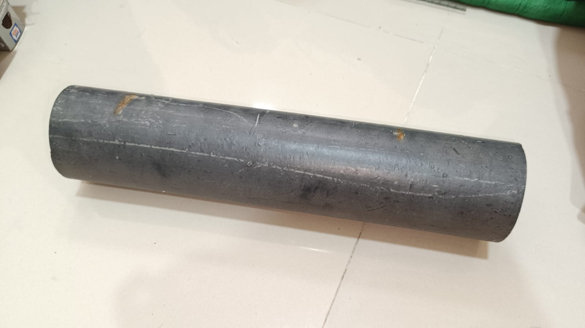 - Wajan

- Amplas

- Baut & Ring
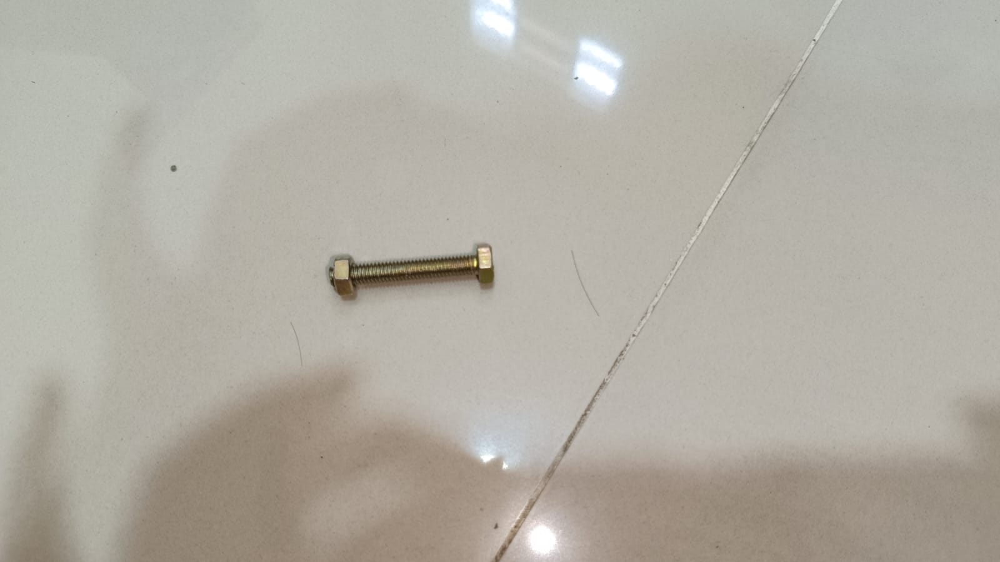 - Tembak Lem
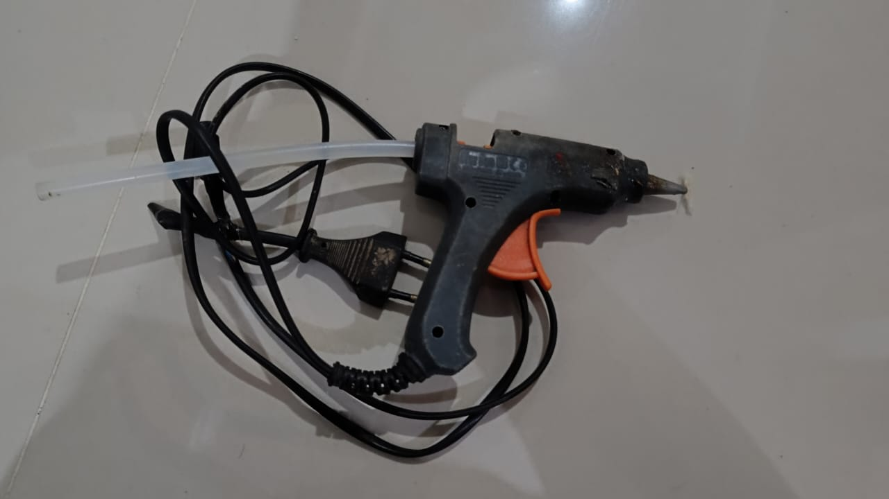 - Tutup Paralon
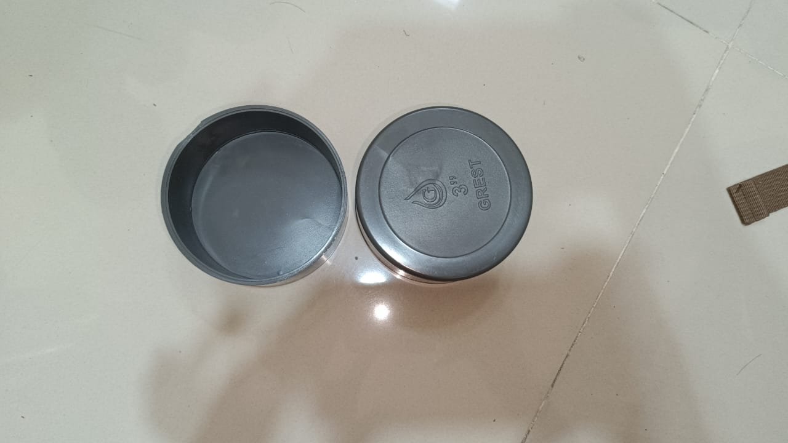 - Solder
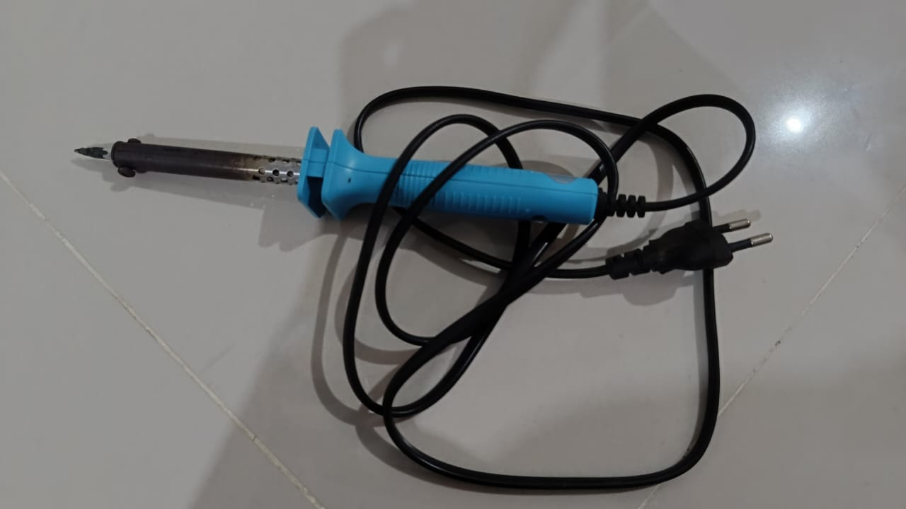 - Lem

- Laptop

- Dongle Wifi

- Kabel Extender
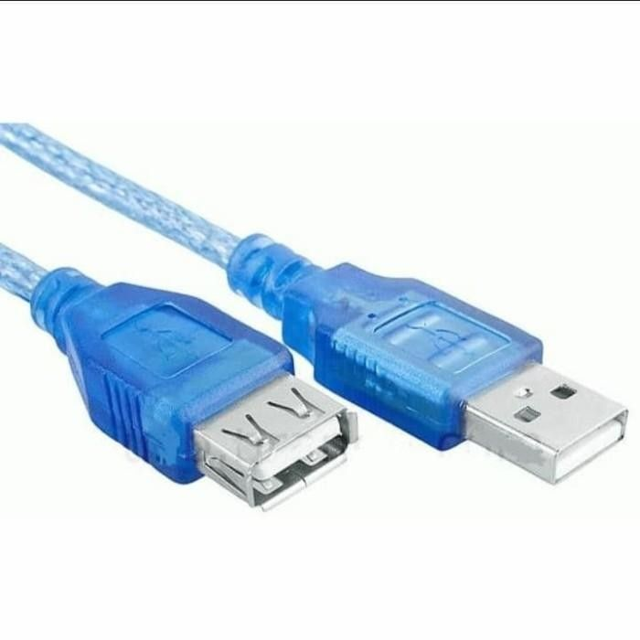 - Gergaji Mesin
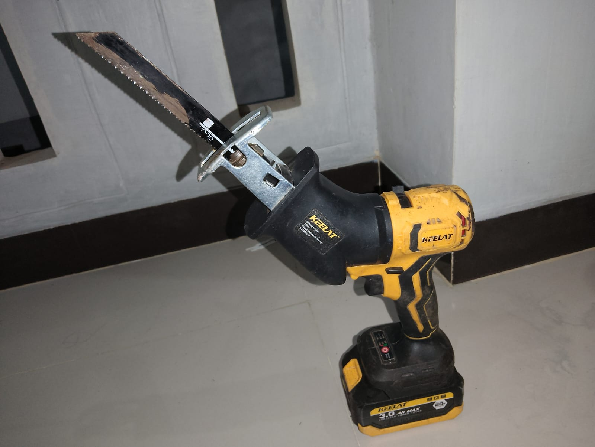 - Gunting & Alumunium Foil
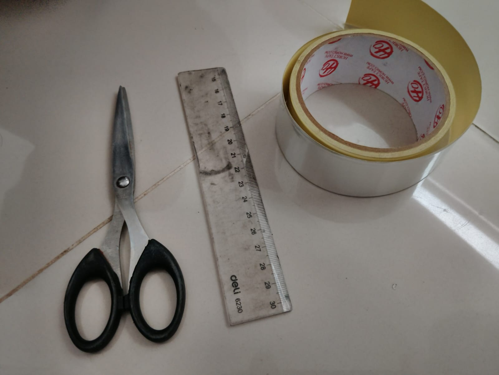
Cara Membuat
- Lubangi tutup paralon

- Pasang tutup paralon ke wajan

- Pasang ring & baut
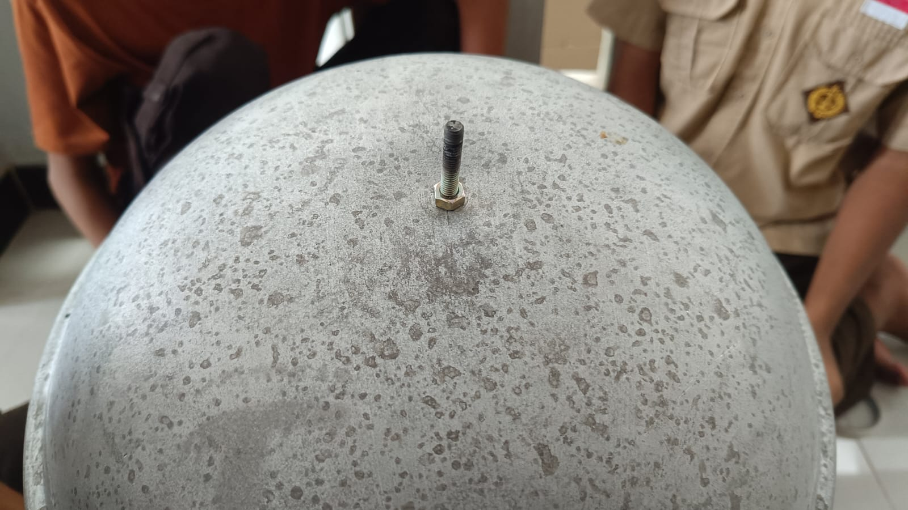 - Amplas paralon untuk mengikis/menghaluskan

- Lubangi titik fokus
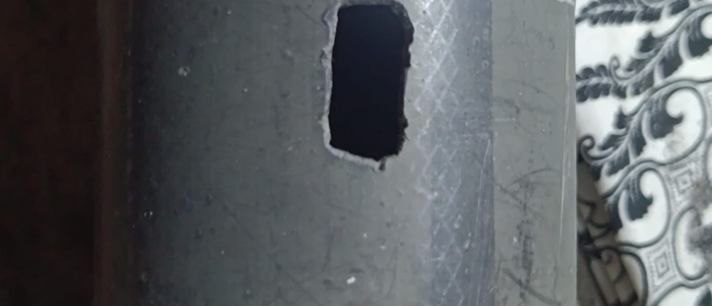 - Pasang alumunium foil

- Pasang alumunium foil di tutup paralon satunya

- Pasang dongle

- Pasang paralon dan kencangkan dengan lem

Pengetesan

Tanpa wajan bolic

Dengan wajan bolic
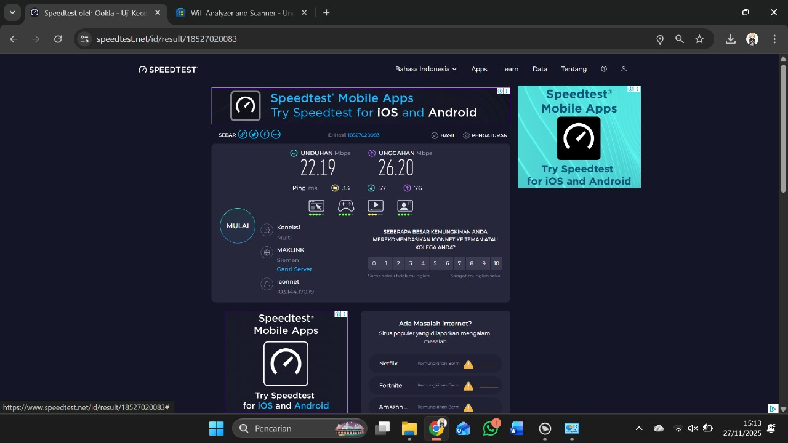Pengetesan dilakukan sebanyak tiga kali hanya menggunakan dongle WiFi dan tiga kali lagi menggunakan Wajan Bolic pada lokasi yang sama, yaitu berjarak sekitar 280 meter dan terhalang dinding. Hasilnya menunjukkan bahwa penerimaan sinyal saat memakai Wajan Bolic jauh lebih baik dibandingkan hanya menggunakan dongle. Kualitas koneksi menjadi lebih kuat, stabil, serta mampu menangkap jaringan yang sebelumnya lemah atau tidak terdeteksi tanpa Wajan Bolic.
Kesimpulan
Berdasarkan seluruh tahapan kegiatan mulai dari studi teori, perancangan desain, pemilihan bahan, proses pembuatan, hingga uji coba performa jaringan yang telah dilakukan, dapat disimpulkan bahwa Wajan Bolic merupakan antena penguat sinyal WiFi yang memiliki efektivitas cukup tinggi meskipun dibuat dari bahan sederhana. Pemanfaatan wajan sebagai reflektor berbentuk cekung mampu memfokuskan gelombang elektromagnetik ke satu arah tertentu, sehingga terjadi peningkatan daya tangkap sinyal, stabilitas koneksi, dan perluasan area jangkauan WiFi terutama pada lingkungan dengan hambatan minimal (line of sight).
Proses uji coba menunjukkan adanya peningkatan nilai indikator kekuatan sinyal (RSSI), penurunan kemungkinan terjadinya packet loss, serta peningkatan kualitas akses internet pada perangkat yang berada pada zona yang sebelumnya sulit menerima jaringan. Hal ini membuktikan bahwa Wajan Bolic tidak hanya berfungsi sebagai reflektor pasif, tetapi juga mampu menjadi solusi alternatif yang murah dan efisien dalam mengatasi masalah keterbatasan sinyal WiFi di rumah, sekolah, maupun wilayah yang belum memiliki dukungan infrastruktur jaringan yang memadai.
Selain manfaat teknis, pembuatan Wajan Bolic juga memberikan nilai edukatif yang sangat penting. Peserta kegiatan memperoleh pemahaman mengenai prinsip dasar pemantulan gelombang, karakteristik antena direksional, serta cara pengukuran performa jaringan menggunakan parameter teknis. Kegiatan ini mendorong kreativitas, keterampilan teknis, kerja sama tim, serta kemampuan untuk mengidentifikasi dan menyelesaikan masalah teknis secara mandiri.
Meskipun demikian, alat ini memiliki beberapa keterbatasan, seperti ketergantungan pada arah pemasangan, sensitivitas terhadap hambatan fisik (tembok dan logam tebal), serta hasil yang dapat berbeda bergantung pada kualitas bahan dan ketelitian dalam penyusunan posisi antena terhadap titik fokus refleksi wajan. Oleh karena itu, diperlukan pengembangan lanjutan untuk meningkatkan efisiensi, misalnya dengan penggunaan material reflektif yang lebih baik, pengaturan sudut yang presisi, serta modifikasi bentuk yang mendukung pemusatan sinyal lebih optimal.
Secara keseluruhan, proyek ini membuktikan bahwa Wajan Bolic merupakan teknologi alternatif yang layak dikembangkan untuk membantu meningkatkan aksesibilitas jaringan internet dengan biaya murah dan proses pembuatan yang sederhana. Dengan demikian, Wajan Bolic dapat menjadi solusi praktis sekaligus sarana pembelajaran dalam mengembangkan pemahaman mengenai antena dan jaringan komunikasi modern di era digital seperti saat ini.